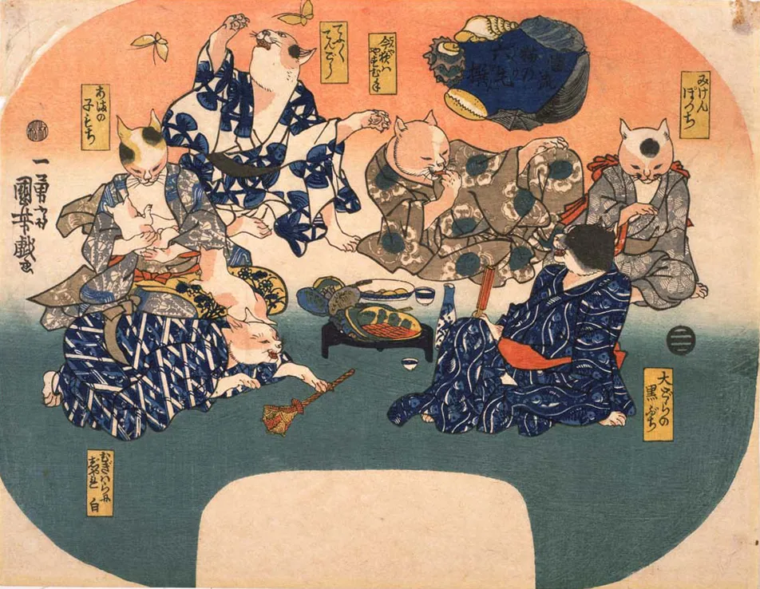

当流猫の六毛撰

江戸の浮世絵師・歌川国芳は、歴史に残るレベルの「猫マニア」でした。いつも家の中でたくさんの猫を飼い、なんと猫を懐 に抱きながら絵筆を走らせていたという逸話まで残っています。
そんな猫愛あふれる彼が、平安時代のカリスマ歌人「六歌仙」をテーマに描いたのがこの作品。
ですが、主役は全員モフモフの猫にすり替わっています！
作品が少し欠けた楕円形なのは、もともと夏の必需品「団扇」に貼り付けて使うための「団扇絵 」だったからです。江戸の人々はこのかわいい猫たちでパタパタと仰ぎながら、暑い夏を過ごしていたんですね。
気になる猫の札に付いている赤いふわふわした丸をクリックしてみてください。モデルとなった歌人の正体が表示されます。表示される内容をさらにクリックタップすると、モチーフにされた歌人のページにリンクします。
ただし、右下の黒ぶちの猫として描かれた大伴黒主は、どこにもリンクしません。実は彼は六歌仙の中で唯一『百人一首』の選考に漏れてしまった「悲運の歌人」なのです。彼は名前に「黒」という字が入っているせいか、昔から物語の中で「ずる賢い悪役」として描かれることが多く、損ばかりしてきました。 例えば、能の演目としても非常に有名な『草紙洗』というお話があります。
- 草紙洗のあらすじ
-
宮中で催される歌合を控え、黒主は当代随一の歌人・小野小町を打ち負かそうと画策します。彼は密かに小町の邸宅へ忍び込み、彼女が詠み上げた渾身の歌を盗み聞きしてしまいました。
黒主はその歌をあらかじめ『万葉集』の古書へと書き込んでおき、晴れ舞台の場で「この歌は古き佳作を盗用したものである」と小町を糾弾します。窮地に立たされた小町でしたが、機転を利かせてその草紙を水で洗うことを願い出ました。
すると、黒主が直前に書き加えた墨の跡だけが鮮やかに洗い流され、彼女の潔白と黒主の偽りが白日の下にさらされたのです。
黒主は、小町に濡れ衣を着せようとして返り討ちに合うという、徹底した悪役として描かれています。そんな「悪役扱い」や「百人一首に選ばれなかったこと」で、歴史上ずっと肩身の狭い思いをしてきた黒主。
でも、国芳が描いたこの黒ぶちの猫をご覧ください。そんな世間の評価なんてどこ吹く風、といった様子で、のんびりと楽しそうに見えませんか？
猫好きの国芳は、物語の中で嫌われ役を一生懸命演じさせられていた黒主だからこそ、せめて自分の絵の中では、誰よりも愛嬌たっぷりの姿で「自由」にしてあげたのかもしれません。